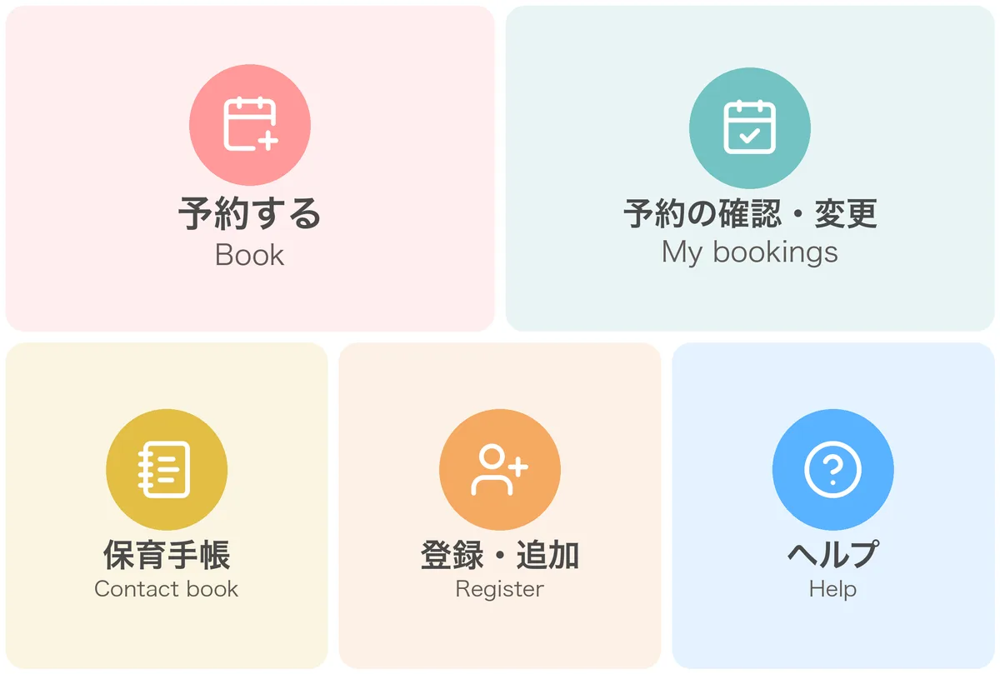
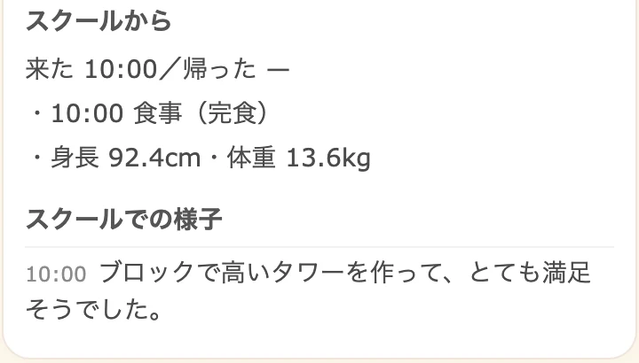
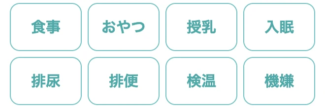
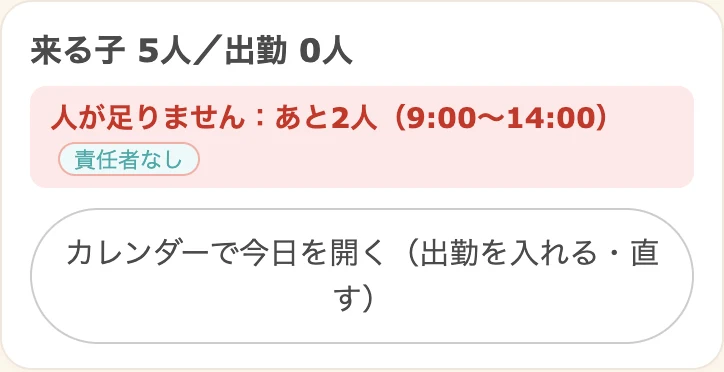
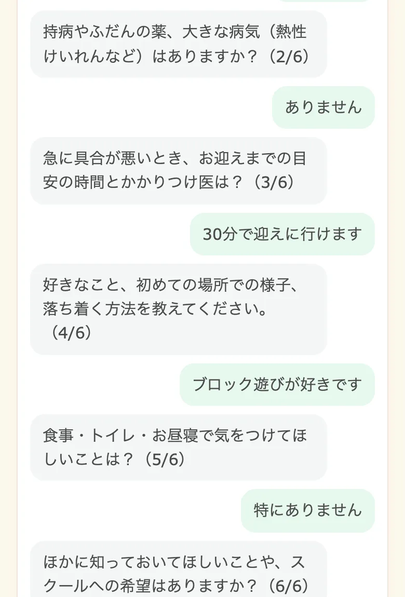

保護者がもう毎日使っている LINE が、そのまま園の窓口になります。今の公式アカウントと友だちのまま始められ、予約も連絡帳も請求書も、いつものトークに届きます。

| 一般的な専用アプリ型の保育ICT | ほいくのわ | |
|---|---|---|
| 導入のしかた | 専用アプリを配布し、保護者と職員に案内する | 今の LINE 公式アカウントと友だち、職員のグループをそのまま使う |
| 保護者の準備 | 専用アプリのインストールと、ログインの設定 | 園の LINE を友だち追加するだけ。LINE がなければメールで登録 |
| 通っている家庭 | アプリでの利用登録が必要 | 電話番号と生年月日で、今の登録とつながる |
| 初めての家庭 | アプリの案内と利用登録から | QR から登録し、AI が聞き取って入園時の聞き取り票を作成 |
| 一時保育の予約 | 製品により、予約は別の仕組みと組み合わせる場合も | 空きを見て LINE で予約。条件が合えば自動で確定 |
| 補助制度の書類 | 製品の標準の書式で作成 | 無償化の提供証明書も、補助券の明細書・請求書も自動で下書き |
※「一般的な専用アプリ型」は、保護者向けに専用アプリを配布する保育ICTの一般的な傾向をまとめたもので、特定の製品を指すものではありません。製品によって対応は異なります。
「こども誰でも通園制度」が全国で本格実施。時間単位の一時預かりと、初めて来る家庭がふえていきます。ほいくのわなら、はじめての登録から予約・当日の記録・請求までを LINE でつなげます。（国や自治体のシステムとの連携は、地域ごとにご相談ください）
保護者

職員

管理者

CASE STUDY — 導入事例
一時保育（休日保育を含む）と月極のインターナショナルスクールを運営する施設様。予約の受付、入園時の聞き取り、連絡帳、職員のシフト、毎月の請求と無償化の提供証明書までを一つの仕組みにまとめ、保護者・職員・管理者がそれぞれの LINE から使っています。英語の講師も英語の画面で利用しています。
ray-kids.com

はじめての家庭には、AI がチャットでお子さんのことを伺い、入園時の聞き取り票にまとめます。通っている家庭は、園の担当者がこれまでのやり取りから AI で登録を下書きし、職員が確かめて登録します。
費用は園の規模と必要な機能によって変わります。ご相談・お見積りは無料です。オンラインでのデモも承ります。
株式会社ハックラボ（HackLab Inc.）
〒150-0002 東京都渋谷区渋谷2丁目19番19号 ワコー宮益坂ビル5階 0x48lab.com